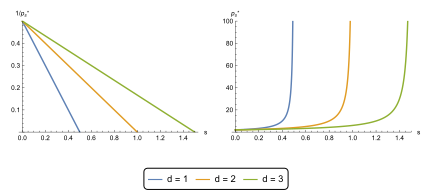

PDEs 5: Fractional Sobolev spaces
1 Summary
There are three ways to define Sobolev spaces with fractional regularity \(s\) and integrability \(p\): \begin{enumerate}
The spaces \(W^{s,p}(\Omega ), B^{s,p}(\Omega )\) are defined by using the analogous to the definition of H"older spaces. Both spaces are equal when \(s\) is not an integer.
The space \(H^{s,p}(\Omega )\) is defined by using the Fourier transform and coincides with \(W^{s,p}(\Omega )\) for integer \(s\).
All these spaces coincide with \(H^s(\Omega )\) when \(p=2\).
Fractional sobolev spaces appear naturally in the study of PDEs. For example, the trace of Sobolev functions \(W^{s,p}(\Omega)\) is equal to the fractional space \(B^{s-1/p,p}(\partial \Omega)\). And finer embeddings and regularity results can be obtained by using these spaces. \end{enumerate}
2 Introduction
In previous posts, we covered the theory of Sobolev spaces \(W^{k,p}(\Omega )\) where \(k\) is an integer. In the case \(k=2\) and when \(\Omega =\R^d\) we saw that this space coincided with \(H^k(\R^d)\). Furthermore, we also saw how to define \(H^s(\R^d)\) when \(s\) was any real number. This motivates the following two questions.
How can we define \(H^s(\Omega )\) when \(\Omega\) is not \(\R^d\) and \(s\) is not an integer ?
Is it possible to extend such a definition to other orders of integrability \(p\)?
In this post, we aim to answer these questions. We will see that both of these questions can be answered in the affirmative. If the domain \(\Omega\) is smooth enough, the first point can be resolved by restricting functions in \(H^s(\R^d)\) to \(\Omega\). The second point is trickier and, in fact, like any good trick question, has multiple answers. Three, to be precise. This leads to the theory of Bessel spaces, Sobolev-Slobodeckij spaces and Besov spaces
\[ \begin{aligned} H^{s,p}(\Omega ),W^{s,p}(\Omega ),B^{s,p}(\Omega ). \end{aligned} \]
We will cover the basic properties of these spaces as well as their relationship to each other with a special focus on \(W^{s,p}(\Omega )\) which is the most widely used. We will see how these spaces can be used to obtain finer regularity results, such as in the trace theorem or Sobolev embeddings. The material in this post is mostly based on (Leoni 2023), (Agranovich 2015), (Di Nezza, Palatucci, and Valdinoci 2012), (Triebel 1992). The material can be quite technical, and there are multiple \(800\) plus page books on the subject, so in many cases, we will state the main results, providing references for the proofs, as well as proving some of the more tractable results.
2.1 Preliminaries
In terms of notation, we will always denote \(U\) by an arbitrary open subset of \(\R^d\) whereas \(\Omega \subset \R^d\) will be open with a smooth enough boundary (in a sense to be made precise later).
We make frequent use of the fact that, as shown in a previous post, functions in \(L^p(U)\) can be identified as elements of the larger space of distributions \(\Dd '(U ):= C_c^\infty(U)'\). This is done by identifying a function \(f \in L^p(U)\) with the linear functional
\[ \begin{aligned} T_f:\phi \mapsto \int_U f\phi \d x. \end{aligned} \]
This identification between \(f\) and \(T_f\) allows us to extend by duality operators that are defined on \(C_c^\infty(U)\) to \(L^p(U)\). For example, given \(u \in L^p(U) \in \Dd'(\Omega )\) we can define its Fourier transform \(\Ff u\) and \(\alpha\)-th derivative \(D^\alpha u\) to be the distributions defined by
\[ \begin{aligned} (\varphi ,\Ff u):=(\Ff^{-1}\varphi ,u),\quad (\varphi ,D^\alpha u):=(-1)^{\abs{\alpha}}(D^\alpha \varphi ,u), \quad \forall \varphi \in C_c^\infty(U). \end{aligned} \]
The above definition is justified by the fact that if it turns out that \(u\) is smooth and integrable enough after all, this coincides with the usual definitions of \(\Ff, D^\alpha\).
3 Fractional Sobolev spaces: three definitions
The definitions developed in the next three subsections can be found in (Agranovich 2015) page 222.
3.1 Sobolev-Slobodeckij spaces
Definition 1 (Sobolev-Slobodeckij spaces) Let \(s=k+\gamma\) where \(k \in \N_0\), and \(\gamma \in [0,1)\). Then, given \(p \in [1,\infty)\) and an arbitrary open \(U \subset \R^d\) we define
\[ \begin{aligned} W^{s ,p}(U):= \set{u \in W^{k ,p}(U): \norm{u}_{W^{s,p}(U)}<\infty}, \end{aligned} \]
where
\[ \begin{aligned} \norm{u}_{W^{s,p}(U)}:= \left(\norm{u}_{W^{k,p}(U)}^p+ \sum_{\abs{\alpha}=k }\int_{U}\int_{U}\frac{\abs{D^\alpha u(x)-D^\alpha u(y)}^p}{\abs{x-y}^{d+\gamma p}}\d x \d y\right)^\frac{1}{p}. \end{aligned} \tag{1}\]
For \(p = \infty\), we define \(W^{s,\infty}(U):= C^{k,\gamma}(U)\). The norm is then given by
\[ \begin{aligned} \norm{u}_{W^{s,\infty}(U)}= \norm{u}_{C^{k}(U)}+ \sum_{\abs{\alpha} =k} \sup _{x, y \in U, x \neq y} \frac{|D^\alpha u(x)- D^\alpha u(y)|}{|x-y|^\gamma }. \end{aligned} \]
Remark 1. In the case where \(U= \R^d\), by a change of variables, we can equivalently define
\[
\begin{aligned}
\norm{u}_{W^{s,p}(\R^d)}:= \left(\norm{u}_{W^{k,p}(\R^d)}^p+ \sum_{\abs{\alpha}=k }\int_{\R^d}\int_{\R^d}\frac{\abs{D^\alpha u(x+y)-D^\alpha u(y)}^p}{\abs{x}^{d+\gamma p}}\d x \d y\right)^\frac{1}{p}.
\end{aligned}
\tag{2}\]
If \(U \neq \R^d\) this is not possible as \(x+y\) may leave the domain where \(u\) is defined.
We will later define \(W^{s,p}(U)\) also for negative \(s\) (see Definition Definition 8). We observe that the above definition coincides with our usual definition of Sobolev space when \(s=k \in \N_0\) and mimics that of the H"older spaces, coinciding exactly when \(p=\infty\).
Exercise 1 Show that \(W^{s,p}(U)\) is a Banach space.
To show that \(|| \cdot ||_{W^{s,p}(U)}\) is a norm apply Minkowski’s inequality to \(u\) and to
\[ \begin{aligned} f_u(x,y):=\frac{D^\alpha u(x)-D^\alpha u(y)}{\abs{x-y}^{\frac{d}{p}+\gamma}}. \end{aligned} \]
Given a Cauchy sequence show that, since \(L^p(U)\) is complete, \(u_n \to u\) in \(L^p(U)\) and that \(f_{u_n} \to f_u\) in \(L^p(U\times U)\) to conclude that \(u_n \to u\) in \(W^{s,p}(U)\).
Though the Sobolev-Slobodeckij spaces can be defined for any open set \(U\), they are most useful when \(U=\R^d\) or \(U\) is regular enough. Otherwise, basic properties such as the following break down
Proposition 1 (Inclusion ordered by regularity) Let \(\Omega\) be an extension domain for \(W^{1,p}\). Then, for \(p \in [1,\infty)\) and \(0<s<s'\) it holds that
\[ \begin{aligned} W^{s',p}(\Omega )\hookrightarrow W^{s,p}(\Omega ). \end{aligned} \]
The proof can be found in (Di Nezza, Palatucci, and Valdinoci 2012) page 10. The regularity of the domain is necessary to be able to extend functions in \(W^{1,p}(\Omega )\) to \(W^{1,p}(\R^d)\). The result is not true otherwise, and an example is given in this same reference.
3.2 Bessel potential spaces
We now give a second definition of fractional Sobolev spaces through the Fourier transform. Here, it is immediately possible to define everything for negative \(s\).
Definition 2 Let \(s\in\R\) and \(u \in \Ss'(\R^d)\). We define the Bessel potential operator \(\Lambda^s\) by
\[ \begin{aligned} \Lambda^s u := \Ff^{-1}\left(\br{\xi}^s \wh{u}(\xi)\right). \end{aligned} \]
In the definition above, we used the notation \(\br{\xi}:=\sqrt{1+|\xi|^2}\). As we saw when we studied Sobolev spaces through the Fourier transform, using the fact that \(\Ff\) is an isometry which transforms differentiation into polynomial multiplication
\[ \begin{aligned} u \in H^k(\R^d) \iff \Lambda^k u \in L^2(\R^d). \end{aligned} \tag{3}\]
Equation (3) motivates the following extension to general \(p\).
Definition 3 (Bessel potential spaces on \(\R^d\)) Let \(s \in \R\) and \(p \in (1,\infty)\), we define the Bessel potential space
\[ \begin{aligned} H^{s,p}(\R^d):=\left\{u \in \mathcal{S}^{\prime}(\mathbb{R}^d): \Lambda ^s u \in L^p(\mathbb{R}^d)\right\}, \end{aligned} \]
and give it the norm
\[ \begin{aligned} \norm{u}_{H^{s,p}(\R^d)}:= \norm{\Lambda^s u}_{L^p(\R^d)}. \end{aligned} \]
By construction, \(H^{k,2}(\R^d)=H^{k}(\R^d)\).
Exercise 2 Show that \(\Lambda^s\Lambda^r=\Lambda^{s+r}\). Use this to show that the following is an invertible isomorphism
\[ \begin{aligned} \Lambda^r: H^{r+s,p}(\R^d) \iso H^{s,p}(\R^d). \end{aligned} \]
Use that \(\br{\xi}^s\br{\xi}^r=\br{\xi}^{s+r}\) and show that the inverse of \(\Lambda^r\) is \(\Lambda^{-r}\).
We now extend this to open domains
Definition 4 (Bessel potential spaces on \(\Omega\)) Let \(U \subset \R^d\) be open. We define
\[ \begin{aligned} H^{s,p}(U ):=\left\{u \in \mathcal{D}^{\prime}(U ): \text{ there exists } v \in H^{s,p}(\R^d) \text{ with } \restr{v}{U }=u\right\}, \end{aligned} \]
and give it the norm
\[ \begin{aligned} \norm{u}_{H^{s,p}(U )}:= \inf \set{\norm{v}_{H^{s,p}(\R^d)}: \restr{v}{U }=u}. \end{aligned} \]
The restriction above is in the sense of distributions. That is, we define the restriction of \(u\) to \(U\) as the distribution \(v\) such that
\[ \begin{aligned} (\phi,u):=(\phi,v), \quad \forall \phi \in C_c^\infty(U ). \end{aligned} \]
Remark 2. It is tempting to define \(\norm{u}_{H^{s,p}(U )}:=\norm{\Lambda^s v}_{L^p(U )}\). However, since the Fourier transform, and thus \(\Lambda^s\), is a nonlocal operator, the norm would depend on the extension \(v\) of \(u\) to \(\R^d\) and be ill-defined.
Remark 3. It would also make sense to define \(H^{s,p}(U )\) through complex interpolation. This is likely different from the above definition, however, as we will later see, this will coincide with the definition above when \(\Omega\) is smooth enough (for example Lipschitz). See also (Leoni 2023) page 328 for a similar remark.
3.3 Besov spaces
Definition 5 (Besov spaces) Let \(s=k_{-}+\gamma\) where \(k_{-} \in \N_0\), and \(\gamma \in (0,1]\). Then, given \(p \in [1,\infty)\) and \(\Omega \subset \R^d\) be an arbitrary open set we define
\[ \begin{aligned} B^{s ,p}(U):= \set{u \in W^{k_{-} ,p}(U): \norm{u}_{B^{s,p}(U)}<\infty}, \end{aligned} \]
where
\[ \begin{aligned} \norm{u}_{B^{s,p}(U)}:= \left(\norm{u}_{W^{k_{-},p}(U)}^p+ \sum_{\abs{\alpha}=k_- }\int_{U}\int_{U}\frac{\abs{D^\alpha u(x)-D^\alpha u(y)}^p}{\abs{x-y}^{d+\gamma p}}\d x \d y\right)^\frac{1}{p}. \end{aligned} \]
For \(p = \infty\), we define \(B^{s,\infty}(U):= C^{k_{-},\gamma}(U)\).
The above definition is extremely similar in form to that of the Sobolev-Slobodeckij spaces Definition 1. In fact, it is equivalent when \(s \notin \N\). The difference is that in the definition of Besov spaces Definition 5, we require that \(\gamma >0\). As a result, always \(k_{-}<s\). We have chosen to indicate this fact by the index “\(-\)” on \(k_{-}\). An equivalent definition is possible which extends the above to negative values of \(s\)
Definition 6 (Besov spaces, negative \(s\)) Let \(s \in \R\) and choose any \(\sigma \not\in \N_0\) with \(\sigma >0\). Then, given \(p \in [1,\infty)\) we define
\[ \begin{aligned} \|u\|_{B^{s,p}(\R^d)}=\left\|\Lambda^{s-\sigma} u\right\|_{W^{\sigma,p}(\R^d)}. \end{aligned} \]
The requirement \(\sigma >0\) is necessary as \(B^{s,p}(\R^d)\neq H^{s,p}(\R^d)\).
Exercise 3 Show that, for all \(r \in \R\) the operator \(\Lambda ^r\) defines an invertible isomorphism
\[ \begin{aligned} \Lambda ^r : B^{s,p}(\R^d)\iso B^{s-r ,p}(\R^d). \end{aligned} \]
Use definition Definition 6 and that \(\Lambda^r\) has inverse \(\Lambda^{-r}\).
The definition of \(B^{s,p}(\R^d)\) can then be extended to general open sets \(\Omega\) and \(U\) in the same way as for the Bessel potential spaces, once more the same observations apply.
Definition 7 (Besov spaces on \(\Omega\)) Let \(\Omega \subset \R^d\) be an smooth. We define,
\[ \begin{aligned} B^{s,p}(\Omega):=\left\{u \in \mathcal{D}^{\prime}(\Omega ): \text{ there exists } v \in B^{s,p}(\R^d) \text{ such that } \restr{v}{\Omega }=u\right\}, \end{aligned} \]
and give it the norm
\[ \begin{aligned} \norm{u}_{B^{s,p}(\Omega)}:= \inf \set{\norm{v}_{B^{s,p}(\R^d)}: \restr{v}{\Omega }=u}. \end{aligned} \]
Remark 4. Different authors use different notations for these spaces. For example, in (Triebel 1992), the notation \(W^{s,p}(\R^d):= B^{s,p}(\R^d)\) is used. With this notation, one has that, for \(p \neq 2\), and \(k \in \N_0\),
\[ \begin{aligned} W^{k,p}(\R^d) \neq \set{ u \in \Dd'(\R^d) : D^\alpha u \in L^p(\R^d) \quad \forall \abs{\alpha}\leq k}= W^{k,p}(\R^d). \end{aligned} \]
This clashes with the definition of integer-valued Sobolev spaces, so we do not use this notation. Other notations which can be found are the notation \(B^{s,p}= \Lambda^{p}_s\) and \(H^{s,p}= \Ll ^{p}_s\). See (Stein 1970) and (Biccari, Warma, and Zuazua 2018).
3.4 Extension domains
Though it is possible to define fractional spaces for any open set, these are most useful when the domain is regular enough. We begin by characterizing the set of extension domains for \(W^{s,p}\). The following result can be found in (Leoni 2017) page 313.
Theorem 1 (Plump sets are extension domains) Let \(\Omega \subseteq \mathbb{R}^N\) be an open connected set, and consider \(p\in [1,+\infty]\), and \(\gamma\in (0,1)\). Then, \(\Omega\) is an extension domain for \(W^{\gamma, p}(\Omega)\) if and only if there exists a constant \(C>0\) such that \[ \lambda_d(B(x, r) \cap \Omega) \geq C r^d \] for all \(x \in \Omega\) and all \(0<r \leq 1\). Where \(\lambda_d\) is the Lebesgue measure on \(\R^d\).
For higher orders of regularity, the following is sufficient: see (Leoni 2023) and (Sawano et al. 2018) section 5.1.
Theorem 2 Let \(\Omega \subset \R^d\) be open with uniformly Lipschitz boundary and consider \(p\in [1,\infty), s\in[1,\infty)\). Then, \(\Omega\) is an extension domain for \(W^{s,p},H^{s,p},B^{s,p}\).
3.5 Interpolation
Both the Sobolev-Slobodeckij and Bessel potential spaces can be viewed as a way to fill the gaps between integer-valued Sobolev spaces. The following uses the concept of complex interpolation. We will not go into detail as the results will not be essential to us, but merely serve as a nice way to understand the relationship between the spaces.
Proposition 2 (Interpolation) Let \(s_1 \neq s_2 >0, p \in (1, \infty)\), \(0<\theta<1\) and
\[ \begin{aligned} s=s_1(1-\theta)+s_2 \theta, \quad \frac{1}{p}=\frac{1-\theta}{p_1}+\frac{\theta}{p_2}. \end{aligned} \]
Then, given an extension domain \(\Omega\) it holds that
\[ \begin{aligned} H^{s,p}(\Omega )=\left[H^{s_1,p_1}(\Omega), H^{s_2,p_2}(\Omega)\right]_{\theta},\quad B^{s,p}(\Omega )=\left[B^{s_1,p}(\Omega ), B^{s_2, p}(\Omega )\right]_\theta, \end{aligned} \]
where \([X,Y]_\theta\) denotes the complex interpolation space.
The result can be found in (Triebel 1992) page 45 for \(\Omega = \R^d\). The general result follows by extension. In particular, if we write \(k:=\left\lfloor s \right\rfloor\) and \(\gamma:=s-k\), then
\[ \begin{aligned} H^{s,p}(\Omega ) & =\left[H^{k,p}(\Omega), H^{k+1,p}(\Omega)\right]_{\gamma }= \left[L^p(\Omega ), H^{k+1,p}(\Omega)\right]_{s/(k+1) } \\ B^{s,p}(\Omega ) & =\left[B^{k,p}(\Omega), B^{k+1,p}(\Omega)\right]_{\gamma }= \left[L^p(\Omega ), B^{k+1,p}(\Omega)\right]_{s/(k+1) }. \end{aligned} \]
4 Relationship between the definitions
The following result shows the inclusions between \(W^{s,p}(\Omega ),H^{s,p}(\Omega ),B^{s,p}(\Omega )\) and can be found in (Agranovich 2015) page 224 and in (Stein 1970) page 155.
Theorem 3 Let \(s \geq 0, \varepsilon >0\) and \(\Omega\) an extension domain for \(H^{s+\varepsilon,p},B^{s+\varepsilon,p}\). Then,
\[ \begin{aligned} H^{s+\varepsilon,p}(\Omega ) & \subset B^{s,p}(\Omega ) \subset H^{s,p}(\Omega )\quad \forall p \in (1,2] \\ B^{s+\varepsilon,p}(\Omega ) & \subset H^{s,p}(\Omega ) \subset B^{s,p}(\Omega )\quad \forall p \in [2,\infty), \end{aligned} \]
where the above inclusions are continuous and dense. Furthermore,
\[ \begin{aligned} W^{s,p}(\Omega )= \begin{cases} H^{s,p}(\Omega ) & \text{ if } s \in \N_0 \\ B^{s,p}(\Omega ) & \text{ if } s \notin \N_0 \end{cases}. \end{aligned} \tag{4}\]
In consequence, for \(p=2\),
\[ \begin{aligned} H^{s,2}(\Omega )=W^{s,2}(\Omega )=B^{s,2}(\Omega ). \end{aligned} \tag{5}\]
The equality in (4) shows that, as long as we understand the behaviour of \(H^{s,p}(\Omega )\) and \(B^{s,p}(\Omega )\), we can completely determine that of \(W^{s,p}(\Omega )\). It also justifies the following extension of \(W^{s,p}(\Omega )\) to negative regularity.
Definition 8 (Slobodeckij space negative \(s\)) Let \(\Omega \subset \R^d\) be an extension domain for \(H^{s,p}(\Omega ), B^{s,p}(\Omega )\). Then, given \(p \in [1,\infty)\) and any \(s \in \R\) we define
\[ \begin{aligned} W^{s,p}(\Omega )= \begin{cases} H^{s,p}(\Omega ) & \text{ if } s \in \Z \\ B^{s,p}(\Omega ) & \text{ if } s \notin \Z \end{cases}. \end{aligned} \]
The equality for \(p=2\) in (5) justifies that, for sufficiently regular domains, all three spaces are written \(H^s(\Omega )\). We will prove the left-hand side of this equivalence in Exercise 4. For \(p\neq 2\), the inclusions are, in general, strict. An example is constructed in (Stein 1970) page 161 exercise 6.8.
Exercise 4 (Equivalence of fractional spaces) Show without using Theorem 3 that
\[ \begin{aligned} H^{s,2}(\R^d)=W^{s,2}(\R^d). \end{aligned} \]
We want to show that the norms are equivalent. That is, that
\[ \begin{aligned} \norm{u}_{H^{s,2}(\R^d)}\sim\norm{u}_{W^{s,2}(\R^d)}. \end{aligned} \]
We already know this is the case when \(s\) is an integer, so it suffices to show that the norms are equivalent for \(s= \gamma \in (0,1)\). That is, that
\[ \begin{aligned} |u|_{\gamma ,2}^2\sim \int_{\mathbb{R}^d}|\xi|^{2 \gamma }|\mathcal{F} u(\xi)|^2 d \xi , \quad\forall \gamma \in (0,1). \end{aligned} \]
By Plancherel’s theorem and a calculation of the Fourier transform of the translation, we have
\[ \begin{aligned} |u|_{\gamma ,2}^2 & =\int_{\R^d}\int_{\R^d}\frac{\abs{u(x+y)-u(y)}^2}{\abs{x}^{d+2\gamma }}\d x \d y = \int_{\R^d}\frac{\norm{\Ff \{u(x+\cdot )-u\}}^2_{L^2(\R^d)}}{\abs{x}^{d+2\gamma }}\d x \\ & =\int_{\R^d}\int_{\R^d} \frac{|e^{2 \pi i x \cdot \xi}-1|^2}{\abs{x}^{d+2\gamma }}|\wh{u}(\xi)|^2\d x\d\xi \\&=2\int_{\R^d}\left(\int_{\R^d} \frac{1-\cos(2\pi \xi\cdot x)}{\abs{x}^{d+2\gamma }}\d x\right)|\wh{u}(\xi)|^2\d\xi. \end{aligned} \]
To treat the inner integral, we note that it is rotationally invariant, and so, by rotating \(\xi\) to the first axis and later changing variable \(x \to x / \abs{\xi}\), we get
\[ \begin{aligned} \int_{\R^d} \frac{1-\cos(2\pi \xi\cdot x)}{\abs{x}^{d+2\gamma }}\d x & =\int_{\R^d} \frac{1-\cos(2\pi \abs{\xi}x_1 )}{\abs{x}^{d+2\gamma }}\d x \\ & =\abs{\xi}^{2 \gamma } \int_{\R^d} \frac{1-\cos(2\pi x_1) }{\abs{x}^{d+2\gamma }}\d x\sim \abs{\xi}^{2 \gamma }. \end{aligned} \]
The last integral is finite as, since \(d+2\gamma >d\), the tails \(\abs{\xi}\to\infty\) are controlled, and since \(1-\cos(2\pi x_1)\sim x_1^2\leq \abs{x}^2\) the integrand has order \(-d+2(1-\gamma)>-d\) for \(\abs{\xi}\sim 0\) . That said, substituting this back into the previous expression gives the desired result.
Exercise 5 Use the previous Exercise 4 to show that if \(\Omega\) is an extension domain for \(H^{s}\), then
\[ \begin{aligned} H^{s,2}(\Omega )=W^{s,2}(\Omega ). \end{aligned} \]
By definition Definition 3 choose a sequence \(v_n \in H^{s,2}(\R^d)\) such that \(\norm{v_n}_{H^{s,2}(\R^d)} \to \norm{u}_{H^{s,2}(\Omega )}\) in \(H^s(\Omega )\). Then,
\[ \begin{aligned} \norm{u}_{H^{s,2}(\Omega)}= \lim_{n\to\infty}\norm{v_n}_{H^{2,2}(\R^d)}\sim \lim_{n\to\infty}\norm{v_n}_{W^{s,2}(\R^d)}\geq \norm{u}_{W^{s,2}(\Omega )}. \end{aligned} \]
To obtain the reverse inequality, use the existence of a continuous extension operator \(E: W^{s,2}(\Omega )\to W^{s,2}(\R^d)\) to obtain
\[ \begin{aligned} \norm{u}_{W^{s,2}(\Omega )}\sim \norm{Eu}_{W^{s,2}(\R^d)}\geq \norm{u}_{H^{s,2}(\R^d)}. \end{aligned} \]
The above suggests that, for \(p=2\), the integrals appearing in the definition of the Slobodeckij spaces Definition 1 correspond to differentiating a fractional amount of times. This indeed is the case
Definition 9 Given \(s \in [0,+\infty)\) and \(u \in \Ss (\R^d)\) we define the fractional Laplacian as
\[ \begin{aligned} (-\Delta )^{s }u(x):= \mathcal{F}^{-1}(\abs{2\pi\xi}^{2 s }\wh{u}(\xi )). \end{aligned} \]
Proposition 3 For \(\gamma \in (0,1)\) and \(u \in H^{\gamma }(\R^d)\) it holds that
\[ \begin{aligned} (-\Delta )^{\gamma }u(x)=C\int_{\R^d}\frac{u(x)-u(x+y)}{\abs{y}^{d+2\gamma}}\d y, \end{aligned} \]
where \(C\) is a constant that depends on \(d,\gamma\).
Proof. The above equality may seem odd at first if we compare it with the integral in Definition 1 where a square appears in the numerator, which gives us our \(2\) in the \(2 \gamma\). However, it is justified by the fact that, by the change of variables \(y \to -y\),
\[ \begin{aligned} \int_{\R^d}\frac{u(x)-u(x+y)}{\abs{y}^{d+2\gamma}}\d y=\int_{\R^d}\frac{u(x)-u(x-y)}{\abs{y}^{d+2\gamma}}\d y. \end{aligned} \]
So, we can get the second order difference in the numerator by adding the two integrals.
\[ \begin{aligned} \int_{\R^d}\frac{u(x)-u(x+y)}{\abs{y}^{d+2\gamma}}\d y=-\frac{1}{2}\int_{\R^d}\frac{u(x+y)-2u(x)+u(x-y)}{\abs{y}^{d+2\gamma}}\d y. \end{aligned} \tag{6}\]
We will conclude the proof if we show that
\[ \begin{aligned} \abs{\xi}^{2\gamma }\wh{u}(\xi )\sim \Ff \left(\int_{\R^d}\frac{u(x)-u(x+y)}{\abs{y}^{d+2\gamma}}\d y\right). \end{aligned} \]
Using (6) and proceeding as in Theorem 3 gives
\[ \begin{aligned} & \Ff \left(\int_{\R^d}\frac{u(x)-u(x+y)}{\abs{y}^{d+2\gamma}}\d y\right)(\xi)= -\frac{1}{2} \left(\int_{\R^d}\frac{e^{2\pi i y \cdot \xi}-2+e^{-2\pi i y \cdot \xi}}{\abs{y}^{d+2\gamma}}\d y\right) \wh{u}(\xi) \\ & =\left(\int_{\R^d}\frac{1-\cos(2\pi y \cdot \xi)}{\abs{y}^{d+2\gamma}}\d y\right) \wh{u}(\xi) =\int_{\R^d} \frac{1-\cos(2\pi y_1) }{\abs{y}^{d+2\gamma }}\d y\abs{\xi}^{2 \gamma }\wh{u}(\xi) \\& \sim \abs{\xi}^{2 \gamma }\wh{u}(\xi). \end{aligned} \]
This completes the proof and shows that the explicit expression for \(C\) is
\[ \begin{aligned} C=\frac{1}{(2\pi)^{2 \gamma }}\int_{\R^d} \frac{1-\cos(2\pi y_1) }{\abs{y}^{d+2\gamma }}\d y. \end{aligned} \]
5 Dual of Sobolev spaces and correspondence with negative regularity
Negative orders of regularity correspond to the dual of Sobolev spaces. This is best seen in the integer case. We first introduce the notation \(W^{s,p}_0(U),H^{s,p}_0(U),B^{s,p}_0(U)\) for the closure of \(C_c^\infty(U)\) in \(W^{s,p}(U),H^{s,p}(U),B^{s,p}(U)\) respectively. We also introduce the notation \(p' = p/(p-1)\) for the conjugate exponent of \(p\). We then have the following result (see (Evans 2022) pages 326-344 for the case \(p=2\)).
Theorem 4 For all \(k \in \mathbb{Z}\) and \(p \in (1,\infty)\) and \(\Omega\) an extension domain for \(W^{k,p}\), it holds that
\[ \begin{aligned} H^{k,p}_0(\Omega )' = H^{-k,p'}(\Omega ), \quad W^{k,p}_0(\Omega )' = W^{-k,p'}(\Omega ). \end{aligned} \]
The first equality will be discussed in the next subsection and is most easily proved when \(\Omega =\R^d\), in which case one can use the homeomorphism \(\Lambda ^s: H^{r,p}(\R^d )\iso H^{r-s,p}(\R^d )\) together with the reflexivity of \(L^p(\R^d )\). The second equality is a direct consequence of the integer order equality \(W^{k,p}(\Omega )=H^{k,p}(\Omega )\) of Theorem 3. For fractional order regularities, we have the following result, which can be found in (Agranovich 2015) page 228.
Theorem 5 Given \(s>0, p \in (1,\infty)\) and \(\Omega\) an extension domain, it holds that the spaces \(W^{s,p}(\Omega ),H^{s,p}(\Omega ),B^{s,p}(\Omega )\) are reflexive Banach spaces with duals
\[ \begin{aligned} W^{s,p}(\Omega )'= W^{-s,p'}_{\overline{\Omega } }(\R^d ), \quad H^{s,p}(\Omega )' = H^{-s,p'}_{\overline{\Omega } }(\R^d ), \quad B^{s,p}(\Omega )' = B^{-s,p'}_{\overline{\Omega } }(\R^d ). \end{aligned} \]
where given a space of distributions \(X\) on \(\R^d\) we define \(X_{\overline{\Omega }}\) as the space of distributions on \(\R^d\) which are supported in \(\overline{\Omega }\). In particular, for \(\Omega =\R^d\),
\[ \begin{aligned} W^{s,p}(\R^d )'= W^{-s,p'}(\R^d ), \quad H^{s,p}(\R^d )' = H^{-s,p'}(\R^d ), \quad B^{s,p}(\R^d )' = B^{-s,p'}(\R^d ). \end{aligned} \]
Remark 5. Some authors define given \(s>0\) and \(p \in [1,\infty)\)
\[ \begin{aligned} W^{-s,p'}(\Omega )':= W^{s,p}_0(\Omega )'. \end{aligned} \tag{7}\]
See, for example, (Biccari, Warma, and Zuazua 2018), (Leoni 2023) page 228. The definition in (7) is equivalent to Definition Definition 8 when \(\Omega = \R^d\) or when \(s=k \in \Z\). However, in other cases, the two definitions are not equivalent.
5.1 The dual of $H^{s,p
(^d)$} For some motivation, we start by considering the case \(\Omega =\R^d\). Note that, in this setting, \(H_0^{s,p}(\R^d)=H^{s,p}(\R^d)\).
Exercise 6 (Dual identification) Prove the identification \(H^{-s,p'}(\R^d)=H^{s,p}(\R^d)'\) for \(s>0\) and \(p \in [1,\infty)\).
Consider the mapping \(H_0^{-s,p'}(\R^d) \to H^{s,p}_0(\R^d)'\) given by \(f \mapsto \ell_f\) where
\[ \begin{aligned} \ell_f(u):= \int_{\R^d}(\Lambda^s u)(\Lambda ^{-s}f). \end{aligned} \]
Show that this mapping is well-defined and continuous. To see that it is invertible, show that, by duality, given \(\ell \in H^{s,p}(\R^d)'\) and \(u \in H^{s,p}(\R^d)\), it holds that
\[ \begin{aligned} (u,\ell )=(\Lambda ^s u,\Lambda ^{-s}\ell ). \end{aligned} \]
Since \(\Lambda ^s u \in L^p(\R^d)\) we deduce that \(\Lambda ^{-s}\ell \in L^{p}(\R^d)'\) and so by the Riesz representation theorem there exists \(f_\ell \in L^{p'}(\R^d)\) such that \(\Lambda ^{-s}\ell =\br{\cdot,f_\ell}\). Show that the inverse of the previous mapping is
\[ \begin{aligned} H^{s,p}(\R^d)' & \longrightarrow H^{-s,p'}(\R^d); \quad \ell = \br{\cdot, \Lambda^s f_\ell} \to \Lambda^s f_\ell. \end{aligned} \]
Exercise 7 Since \(H^{s}(\R^d)\) is a Hilbert space, by the Riesz representation theorem, we have the identification \(H^s(\R^d) = H^{s}(\R^d)'\). As a result, by the previous exercise \(H^{-s}(\R^d)= H^s(\R^d)\) How is this possible?
It does not hold that \(H^{-s}(\R^d)= H^s(\R^d)\). The problem occurs when considering too many identifications at once, as we are identifying duals using different inner products. By following the mappings, we obtain isomorphisms
\[ \begin{aligned} & H^{s}(\R^d) \iso H^s(\R^d)' \iso H^{-s}(\R^d) \\ & u \longmapsto \br{\cdot, u}_{H^s(\R^d)}= \br{\cdot, \Lambda^{2s} u } \mapsto \Lambda ^{2s} u. \end{aligned} \]
However, the composition \(H^s(\R^d) \iso H^{-s}(\R^d)\) is \(\Lambda ^{2s}\), which is hardly the identity mapping.
For another example where confusion with this kind of identification can arise, see remark 3 on page 136 of (Brezis and Brézis 2011).
5.2 The dual of $H^{s,p
_0()$} Given an extension domain \(\Omega\) and \(s \geq \R\) , one can define extension and restriction operators,
\[ \begin{aligned} E:H^{s,p}(\Omega ) \to H^{s,p}(\R^d), \quad \rho: H^{s,p}(\R^d) \to H^{s,p}(\Omega ), \end{aligned} \]
which verify \(\rho \circ E = \Id_{H^s(\Omega )}\). As a result, the restriction is surjective, and we can factor \(H^{s,p}(\Omega )\) as
\[ \begin{aligned} H^{s,p}(\Omega )\simeq H^{s,p}(\R^d)\backslash H^s_{\Omega^c}(\R^d ), \end{aligned} \tag{8}\]
where given a closed set \(K \subset \R^d\) we define
\[ \begin{aligned} H^{s,p}_K(\R^d):= \set{u \in H^{s,p}(\R^d): \rm{supp}(u) \subset K}, \end{aligned} \]
the support being understood in the sense of distributions Now, given a Banach space \(X\) and a closed subspace \(Y \hookrightarrow X\), elements of \(X'\) can be restricted to \(Y\), obtaining functionals in \(Y'\). The kernel of this restriction is \(Y^\circ:=\set{\ell \in X': Y \subset \rm{ker}(\ell)}\). Since, by the Hahn Banach theorem, the restriction is surjective, we obtain the factorization
\[ \begin{aligned} Y' \simeq X'\backslash Y^\circ. \end{aligned} \tag{9}\]
Applying this to \(Y= H^{k,p}_0(\Omega )\hookrightarrow H^{k,p}(\R^d) =X\) we obtain the result of Theorem 4.
\[ \begin{aligned} H^{k,p}_0(\Omega )' \simeq H^{k,p}(\R^d)'\backslash H^{k,p}(\Omega)^\circ\simeq H^{-k,p'}(\R^d)\backslash H^{-k,p'}_{\Omega^c}(\R^d ) \end{aligned} \]
where the second equality is by Exercise 6. This coincides well with what we observed in (8) and justifies an extension of (8) for negative \(s\).
As a final note, if \(\Omega \neq \R^d\), then \(H_0^k(\Omega )'\) and \(H^k(\Omega )'\) are not equal. Rather,
\[ \begin{aligned} H^{k,p}(\Omega )'\simeq H_{\overline{\Omega } }^{-k,p'}(\R^d), \quad H^{-k,p'}(\Omega ) \simeq H^{-k,p'}(\R^d)\backslash H^{-k,p'}_{\Omega ^c }(\R^d). \end{aligned} \]
See (Taylor 2013) Section 4 for more details.
6 Representation theorems
We know that we can homeomorphically map the spaces \(H^{s,p}(\R^d )\) and \(B^{s,p}(\R^d )\) to the lower order spaces \(H^{s-r,p}(\R^d )\) and \(B^{s-r,p}(\R^d )\) by application of \(\Lambda ^r\) (differentiating \(r\) times). In other words, spaces of lower-order regularity are obtained by differentiating functions with higher regularity. We show how to extend this idea to smooth domains in some particular cases.
Theorem 6 (Representation of \(W_0^{k,p}(\Omega )'\)) Let \(\Omega \subset \R^d\) be an extension domain for \(W^{k,p}\) where \(k \in \N_0\) and \(p \in (1,\infty)\). Then, every element in \(W^{-k,p'}(\Omega )=W^{k,p}_0(\Omega )'\) is the unique extension of a distribution of the form
\[ \begin{aligned} \sum_{0\leq\abs{\alpha}\leq k} D^\alpha u_\alpha\in \Dd'(\Omega ),\quad \text{where } u_\alpha \in L^{p'}(\Omega ). \end{aligned} \]
Proof. Define the mapping
\[ \begin{aligned} T: W^{k,p}(\Omega ) & \longrightarrow L^p(\Omega \to \R^M) \\ u & \longmapsto(D^\alpha u)_{0 \leq\abs{\alpha}\leq k}, \end{aligned} \]
where \(M\) is the number of multi-indices bounded by \(k\). Where the notation says that we send \(u\) to the vector formed by all its derivatives. By our definition of the norm on \(W^{k,p}(\Omega )\), we have that \(T\) is an isometry and, in particular, continuously invertible on its image. Denote the image of \(T\) by \(X:=\rm{Im}(T)\). Given \(\ell \in W^{-k,p'}(\Omega )\) we define
\[ \begin{aligned} \ell_0: X \to \R, \quad \ell_0(\mathbf{w}):= \ell(T^{-1}\mathbf{w}), \quad \forall \mathbf{w} \in X. \end{aligned} \]
By Hahn Banach’s theorem, we can extend \(\ell_0\) from \(X\) to a functional \(\ell_1 \in L^p(\Omega \to \R^M)'\) and by the Riesz representation theorem, we have that there exists a unique \(\mathbf{f}=(f_\alpha)_{0\leq \abs{\alpha}\leq k }\in L^{p'}(\Omega \to \R^M)\) such that
\[ \begin{aligned} \ell_1(\mathbf{w})=\int_{\Omega}\mathbf{w}\cdot \mathbf{f}, \quad \forall \mathbf{w} \in L^p(\Omega \to \R^M). \end{aligned} \]
By construction, it holds that, for all \(v \in W^{k,p}(\Omega )\)
\[ \begin{aligned} \ell(v)=\ell_0(Tv)=\int_{\Omega}Tv\cdot \mathbf{f}=\sum_{0\leq\abs{\alpha}\leq k}\int_{\Omega}f_\alpha D^\alpha v . \end{aligned} \]
In particular, this holds for \(v \in \Dd(\Omega )\) and if we set \(u_\alpha:=(-1)^\alpha f_\alpha\) we obtain that for all \(v \in \Dd(\Omega )\)
\[ \begin{aligned} \ell(v)=\left(v,\sum_{0\leq\abs{\alpha}\leq k} D^\alpha u_\alpha\right)=: \omega(v) \end{aligned} \tag{10}\]
(we recall the notation \((v,\omega)\) for the duality pairing). By definitions of the norm on \(W^{k,p}(\Omega )\) and Cauchy Schwartz, we have that \(\omega\) is continuous with respect to the norm on \(W^{k,p}(\Omega )\) and so we may extend it uniquely to the closure of \(\Dd(\Omega )\) in \(W^{k,p}(\Omega )\) which is \(W^{k,p}_0(\Omega )\). By (10), the extension is necessarily \(\omega\). This completes the proof.
The above theorem shows that \(W^{-k,p'}(\Omega )\) can be equivalently formed by differentiating \(k\) times functions in \(L^{p'}(\Omega )\). The proof also sheds some light as to why \(W^{-s,p'}(\Omega )\) is the dual of \(W^{k,p}_0(\Omega )\) and not the dual of \(W^{k,p}(\Omega )\). The reason is that given a sufficiently regular distribution in \(\Dd'(\Omega )\), it has a unique continuous extension to an element of \(W_0^{k,p}(\Omega )'\), but not to an element of \(W^{k,p}(\Omega )'\). We note however that, though the extension from \(\Dd'(\Omega )\) to \(W^{-s,p}(\Omega )\) is unique, the functions \(u_\alpha\) will not be, for example, if \(\abs{\alpha}>0\) it is possible to add a constant to \(u_\alpha\) and still obtain the same result.
Exercise 8 Show that for \(s= \gamma +k\) where \(k \in \N_0, \gamma \in [0,1)\) and \(p \in [1,\infty)\) and an extension domain for \(H^{s,p}\), every element in \(H^{-s,p'}(\Omega )\) can be written in the form \(\restr{w}{\partial \Omega }\), where
\[ \begin{aligned} w=\sum_{0\leq\abs{\alpha}\leq k} \Lambda^{\gamma } D^\alpha u_\alpha\in \Dd'(\R^d ),\quad \text{where } u_\alpha \in L^{p'}(\R^d ). \end{aligned} \]
Use that \(\Lambda ^{\gamma }: H^{s,p}(\R^d) \to H^{k ,p}(\R^d)\) is an isomorphism and the just proved Theorem 6 together with the integer equivalence in Theorem 3 to show that
\[ \begin{aligned} H^{s,p}(\R^d)' = \set{ \sum_{0\leq\abs{\alpha}\leq k} \Lambda^{\gamma } D^\alpha u_\alpha\in \Dd'(\R^d ),\quad \text{where } u_\alpha \in L^{p'}(\R^d )}. \end{aligned} \]
Now conclude by the definition of \(H^{-s,p'}(\Omega )\) for open domains Definition 4.
The above results extend to Besov spaces; see (Agranovich 2015) page 227. This gives,
Theorem 7 Let \(k \in \N_0, \gamma \in [0,1), \theta \in (0,1)\) and \(p \in [1,\infty)\) where \(\Omega\) is an extension domain for \(B^{\theta ,p}, H^{\gamma ,p}\). Then,
\[ \begin{aligned} B^{\theta -k,p}(\Omega ) & = \set{ \sum_{0\leq\abs{\alpha}\leq k} D^\alpha u_\alpha\in \Dd'(\Omega ),\quad \text{where } u_\alpha \in B^{\theta ,p}(\Omega )} \\ H^{\gamma -k,p}(\Omega ) & = \set{ \sum_{0\leq\abs{\alpha}\leq k} D^\alpha u_\alpha\in \Dd'(\Omega ),\quad \text{where } u_\alpha \in H^{\gamma ,p}(\Omega )} \\ W^{\gamma -k,p}(\Omega ) & = \set{ \sum_{0\leq\abs{\alpha}\leq k} D^\alpha u_\alpha\in \Dd'(\Omega ),\quad \text{where } u_\alpha \in W^{\gamma ,p}(\Omega )}. \end{aligned} \]
7 Some applications: Trace, embeddings and regularity
7.1 Trace operator
Consider \(f \in L^p(\Omega )\) a PDE of the form
\[ \begin{aligned} \Ll u =f \text{ in } \Omega , \quad \restr{u}{\partial \Omega }= g. \end{aligned} \tag{11}\]
Then, it is necessary to know exactly what boundary data \(g\) is admissible. Suppose that \(\Ll\) is of order \(k\) so we require \(u \in W^{k,p}(\Omega )\). Will (11) have a solution? To be able to answer this question, we need to know the image of the trace operator. If \(g \notin \operatorname{Tr}(W^{k,p}(\Omega ))\), then there is no hope of finding a solution. The following theorem characterizes the image of the trace operator and can be found in (Agranovich 2015) page 228 and (Leoni 2023, 229:350, 492).
Theorem 8 (Fractional trace theorem) Let \(\Omega \subset \R^d\) be open with \(C^{k,1}\) boundary. Then, for all \(p\in (1,\infty), s\in (1/p,k)\), the trace operator \(\operatorname{Tr}\) can be extended from \(C(\overline{\Omega } )\) to a bounded operator
\[ \begin{aligned} \operatorname{Tr}: H^{s,p}(\Omega ) \to B^{s-1/p,p}(\partial\Omega), \quad \operatorname{Tr}: B^{s,p}(\Omega ) \to B^{s-1/p,p}(\partial\Omega). \end{aligned} \]
Furthermore, given \(g \in B^{s-1/p,p}(\partial\Omega)\), there exists \(u \in W^{s,p}(\Omega )\) such that \(\operatorname{Tr}(u)=g\) with
\[ \begin{aligned} \norm{u}_{W^{s,p}(\Omega )}\lesssim \norm{g}_{B^{s-1/p,p}(\partial\Omega)}. \end{aligned} \]
Note that, since we have equality of \(W^{s,p}(\Omega )\) with \(H^{s,p}(\Omega )\) and \(B^{s,p}(\Omega )\) for integer and non-integer \(s\) respectively, we can also extend
\[ \begin{aligned} \operatorname{Tr}: W^{s,p}(\Omega ) \to B^{s-1/p,p}(\partial\Omega). \end{aligned} \]
7.2 Fractional Sobolev embeddings
In this section, we state the fractional analogue of the Sobolev embedding theorems for regularity \(\gamma \in (0,1)\). Here, the analogous of the exponent \(p_k^{*}\) is
Definition 10 Given \(p \in [1,\infty)\) and \(s>0\), with \(s\in (d/p, \infty)\), we define the Sobolev critical exponent \(p_s^*\) by
\[ \begin{aligned} \frac{1}{p_s ^*}:=\frac{1}{p}-\frac{s }{d}. \end{aligned} \]
The natural extension of the Sobolev embedding theorem to the fractional case is the following. First, we introduce the following notation for the fractional seminorm.
\[ \begin{aligned} \abs{u}_{W^{\gamma, p}(\Omega )}:=\int_{\R^d}\int_{\R^d}\frac{\abs{u(x+y)-u(y)}}{\abs{x}^{d+\gamma p}}\d x \d y. \end{aligned} \]
See (Leoni 2023) page 262 for the following result.
Theorem 9 (Fractional Sobolev-Gagliardo-Niremberg) Given an extension domain \(\Omega\) for \(W^{\gamma,p}\) and \(\gamma \in (0,1), p \in [1,\infty)\), it holds that
\[ \begin{aligned} \|u\|_{L^{p_\gamma^*}(\Omega )} \lesssim \|u\|_{W^{\gamma, p}(\Omega )}, \quad\forall \gamma < \frac{d}{p} \end{aligned} \]
In particular, by interpolation, for all \(q \in [p,p_\gamma^*]\).
\[ \begin{aligned} \|u\|_{L^{q}(\Omega )} \lesssim \norm{u}_{W^{\gamma, p}(\Omega )}, \quad\forall \gamma < \frac{d}{p}. \end{aligned} \]
The critical case \(\gamma=\frac{d}{p}\) corresponding to \(p_\gamma^*=\infty\) is now (see (Leoni 2023) page 265)
Theorem 10 Given an extension domain \(\Omega\) for \(W^{\gamma,p}\) and \(\gamma \in (0,1), q \in [p,\infty)\), it holds that
\[ \begin{aligned} \|u\|_{L^q(\Omega )} \lesssim\|u\|_{W^{\gamma, p}(\Omega)}, \quad \gamma = \frac{d}{p}. \end{aligned} \]
Exercise 9 Using Theorem 9 prove Theorem 10
We are in the subcritical case for \(r<d/p=\gamma\). Extend \(u\) to \(\R^d\) to form \(\tl{u}\). Then, by Proposition 1, we have
\[ \begin{aligned} \|u\|_{L^{p_r^*}(\Omega )}\leq \|u\|_{L^{p_r^*}(\R^d )} \lesssim \norm{u}_{W^{r, p}(\R^d )}\leq \norm{u}_{W^{\gamma, p}(\R^d )}\lesssim \norm{u}_{W^{\gamma, p}(\Omega )}. \end{aligned} \]
Conclude by finding \(r\) such that \(p_r^*=q\).
The supercritical case \(\gamma>d/p\) can be found in (Agranovich 2015) page 224 and (Leoni 2023) page 275. To simplify the notation we use the convention that \(C^r\) stands for \(C^{\lfloor r \rfloor, r-\lfloor r \rfloor}\).
Theorem 11 (Morrey’s fractional embedding) Let \(\Omega\) be an extension domain for \(W^{s,p}\), we have a continuous embedding
\[ \begin{aligned} W^{s,p}(\Omega) \hookrightarrow C^{s-d/p}(\Omega), \quad\forall s> \frac{d}{p}. \end{aligned} \]
This embedding also holds for \(s=d / p\) provided that \(s-d/p\) is non-integer.
As in the non-fractional case, one can also consider higher smoothness on the right-hand side (see (Leoni 2023) page 290).
Theorem 12 (Sobolev embedding into higher smoothness) Let \(\Omega\) be an extension domain for \(W^{\gamma,p}\). Then, given \(p_1, p_2 \in [1,\infty)\) and \(0\leq \gamma_1<\gamma_2< 1\), it holds that
\[ \begin{aligned} \norm{u}_{W^{\gamma_1,p_1}(\Omega )}\lesssim \norm{u}_{W^{\gamma_2,p_2}(\Omega )}, \quad\forall \gamma_2 - \frac{d}{p_2} = \gamma_1 - \frac{d}{p_1}. \end{aligned} \]
Exercise 10 Justify via a scaling argument that the condition \(\gamma_2 - \frac{d}{p_2} = \gamma_1 - \frac{d}{p_1}\) is necessary for the embedding in Theorem 12.
Extend to a function on \(\R^d\), then swap \(u\) with \(u_\lambda (x):=u(\lambda x)\)and apply the change of variables \((x,y)\to \lambda (x,y)\).
Finally, interpolation results are also possible. See (Leoni 2023) page 300.
Theorem 13 Let \(\Omega\) be an extension domain for \(W^{\gamma,p}\) and consider \(p_1,p_2 \in (1,\infty), 0 \leq \gamma_1<\gamma_2 \leq 1,\) and \(0<\theta<1\). Then
\[ \begin{aligned} \|u\|_{W^{s, p}(\R^d)} \lesssim\|u\|_{W^{\gamma_1, p_1}(\R^d)}^\theta\|u\|_{W^{\gamma_2, p_2}(\R^d)}^{1-\theta} \end{aligned} \]
for all \(u \in W^{\gamma_1, p_1}(\R^d) \cap W^{\gamma_2, p_2}(\R^d)\), where \(\frac{1}{p}=\frac{\theta}{p_1}+\frac{1-\theta}{p_2}\) and \(s=\theta \gamma_1+\) \((1-\theta) \gamma_2.\)
The above results can also be formulated in terms of the Sobolev seminorm. For example, Theorem 13 can be formulated as
\[ \begin{aligned} \abs{u}_{W^{s, p}(\R^d)} \lesssim \abs{u}_{W^{\gamma_1, p_1}(\R^d)}^\theta\abs{u}_{W^{\gamma_2, p_2}(\R^d)}^{1-\theta}. \end{aligned} \]
Higher order embeddings and interpolations can be obtained from the previous cases with regularity parameter below 1 in combination with the integer case.
Exercise 11 (Fractional Sobolev Embeddings) Let \(\Omega \subset \mathbb{R}^d\) be an extension domain for \(W^{s,p}\). Given \(s \ge 0\) and \(p \in [1, \infty)\), set \(k=\lfloor s \rfloor\) and \(\gamma =s-k\). The following continuous embeddings hold:
\[ \begin{aligned} & W^{s, p}(\Omega) \hookrightarrow L^q(\Omega), \quad \forall q \in [p, p_s^*] \quad \text{ if } s<\frac{d}{p} \\ & W^{s, p}(\Omega) \hookrightarrow L^q(\Omega), \quad \forall q \in [p, \infty) \quad \text{ if } s=\frac{d}{p} \\ & W^{s, p}(\Omega) \hookrightarrow C^{m, \alpha}(\bar{\Omega}) \text{ if } s>\frac{d}{p} \text{ and } s-\frac{d}{p} \notin \mathbb{N}, \end{aligned} \]
where \(\frac{1}{p_s^*} = \frac{1}{p} - \frac{s}{d}\), \(m = \lfloor s - d/p \rfloor\), and \(\alpha = s - d/p - m\) if \(s - d/p \notin \mathbb{N}\) or \(\alpha \in (0, 1)\) is any otherwise.
Observe the algebraic relation:
\[ \begin{aligned} \frac{1}{(p_\gamma ^*)_k^*}=\frac{1}{p_\gamma^*}-\frac{k}{d}=\frac{1}{p}-\frac{s}{d}= \frac{1}{p_s^*}. \end{aligned} \]
The result follows from applying Theorem 9 and Theorem 11 sequentially with the integer-case embeddings. For the first (the subcritical) case, the fractional embedding Theorem 9 yields:
\[ \begin{aligned} \norm{D^\alpha u}_{L^{p_\gamma ^*}(\Omega )}\lesssim \norm{D^\alpha u}_{W^{\gamma ,p}(\Omega )} \lesssim \norm{u}_{W^{s,p}(\Omega )}, \quad \forall \abs{\alpha}\leq k. \end{aligned} \]
Applying the integer Sobolev embedding to \(W^{k, p_\gamma^*}(\Omega)\), we conclude:
\[ \begin{aligned} \norm{u}_{L^{p_s^*}(\Omega)}=\norm{u}_{L^{(p_\gamma ^*)_k ^*}(\Omega)}\lesssim \norm{u}_{W^{k,p_\gamma ^*}(\Omega)}\lesssim \norm{u}_{W^{s,p}(\Omega)}. \end{aligned} \]
For the second (critical) case \(s=d/p\), the same bootstrapping yields \(W^{s,p}(\Omega) \hookrightarrow W^{k, p_\gamma^*}(\Omega)\). Since \(k = d/p_\gamma^*\), the integer critical embedding applies.
For the supercritical case (\(s>d/p\)), apply the fractional Morrey embedding directly, or bootstrap to an integer space \(W^{k, \tilde{p}}(\Omega)\) where \(k > d/\tilde{p}\), and apply the integer Morrey embedding to extract the precise Hölder regularity \(C^{m, \alpha}(\bar{\Omega})\).
Below we plot the Sobolev critical exponent \(p_s^*\) for \(p=2\) and \(d=1,2,3\). As we can see, it decreases with \(d\) and increases with \(s\). This means that the larger the dimension the more regularity we need to obtain a bound on the same \(L^q(\R^d)\) norm. The integrability increasing to infinity around the critical threshold \(s=d/p\).

Exercise 12 Let \(\Omega\) be an extension domain for \(W^{s_1,p}\). Show that, given \(p_1, p_2 \in [1,\infty)\) and \(0 \leq s_2<s_1 <\infty\), it holds that
\[ \begin{aligned} W^{s_1, p_1}(\Omega ) \hookrightarrow W^{s_2, p_2}(\Omega ), \quad s_1 - \frac{d}{p_1} = s_2 - \frac{d}{p_2}. \end{aligned} \]
Set \(k_i =\left\lfloor s_i \right\rfloor\) and \(\gamma_i =s_i-k_i\). Apply Theorem 12 to the derivatives of order up to \(k_2\) to obtain
\[ \begin{aligned} \norm{D^\alpha u}_{W^{\gamma_2, p_2}(\Omega )}\lesssim \norm{D^\alpha u}_{W^{\gamma _1,p_1}(\Omega )} \leq \norm{u}_{W^{s_1,p_1}(\Omega )}, \quad \forall \abs{\alpha}\leq k_2. \end{aligned} \]
Deduce that
\[ \begin{aligned} \norm{u}_{W^{s_2,p_2}(\Omega )}\lesssim \norm{u}_{W^{s_1,p_1}(\Omega )}. \end{aligned} \]
For more higher order embeddings see also (Leoni 2023) Section 11.4. Finally, embeddings can be similarly formulated for Besov spaces. See (Sawano et al. 2018) page 219 for the following result.
Theorem 14 (Embedding for Besov spaces) Let \(\Omega\) be an extension domain, and consider \(1 \leq p_1<p_2 \leq \infty, - \infty <s_2<s_1<\infty\). Then,
\[ \begin{aligned} B^{s_1,p_1}(\Omega) \hookrightarrow B^{s_2,p_2}(\Omega), \quad s_1-\frac{n}{p_1}=s_2-\frac{n}{p_2} . \end{aligned} \]
This and other results can be formulated for the more general spaces \(B^{s,p}_q\). Where \(B^{s,p}= B^{s,p}_p\). See, (Triebel 1992), (Agranovich 2015), (Sawano et al. 2018).
We conclude this post by commenting that given a second-order PDE with smooth coefficients, such as
\[ \begin{aligned} - \Delta u =f \text{ in } \Omega , \quad \restr{u}{\partial \Omega }= 0. \end{aligned} \]
One expects that \(u\) is two degrees more regular than \(f\). That is, if \(f \in W^{s,p}(\Omega )\), then we should have \(u \in W^{s+2,p}(\Omega )\). This is indeed the case locally. However, to obtain smoothness up to the boundary, one also needs \(\partial \Omega\) to be regular enough. In this case, Lipschitz continuity of \(\Omega\) is not sufficient, even if \(f \in C^\infty(\overline{\Omega } )\) (see for example (Savaré 1998)). We may comment on this later in a future post.
To edit or delete, click the timestamp (e.g., "5 minutes ago").